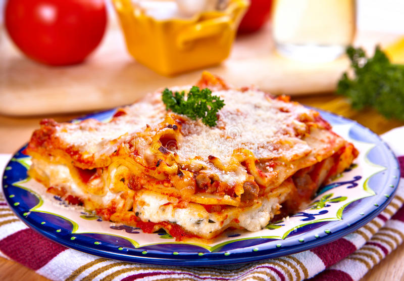

Lasagna

Lasagna is easy dish to make, delicious and full of flavor. A hearty Italian meal that will be enjoyed by everyone in the family.
Below you will find a list of ingredients required for this dish.
Ingredients
- 300g lasagne sheets
- 750g lean beef mince
- 200ml beef stock
- Passata sauce
- Cheese sauce
- 125g mozzarella
- Olive oil
- Nutmeg
Steps
- Heat 2 tbsp olive oil in a frying pan and cook 750g lean beef mince in two batches for about 10 mins until browned all over
- Pour over 800g passata and add 200ml beef stock. Add grated nutmeg to season.
- Bring to the boil, then simmer for 30 mins until the sauce looks rich.
- Heat oven to 180C/fan/160C/gas mark 4 and lightly oil an ovenproof dish.
- Spoon one third of the meat sauce into the dish, then cover with some fresh lasagna sheet from a 300g pack. Drizzle over roughly 130g ready-made or homemade cheese sauce.
- Repeat untill you have 3 layers of pasta. Cover with the remaining 390g cheese sauce, making sure you can't see any pasta.
- Scatter 125g torn mozzarella over the top.
- Bake for 45 mins untill the top is bubbling and lightly browned.